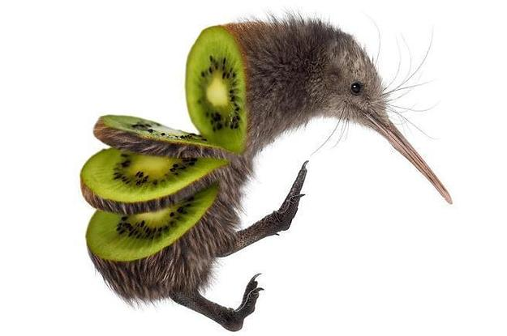

This is a banana dragon. Its so amazing like its a dope dragon and an awsome FRICKING BANANA LIKE YASSSSSS.

This is a Kiwi Bird. Ba Dum Tshhhh. It is like the coolest bir in the world. Its endangerd and just so h*ckin adorable.
This is my second favorite animal called a lynx. It is super cool and can take down animals twice its size. The lynx is a predetor obviously.